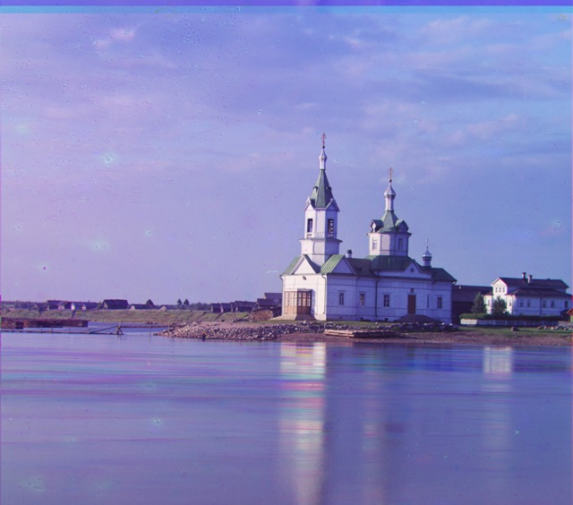
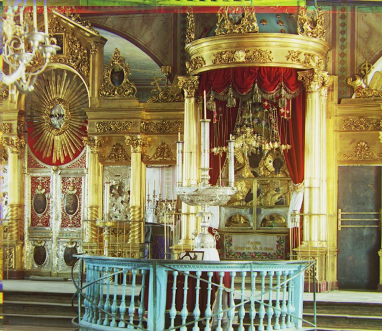
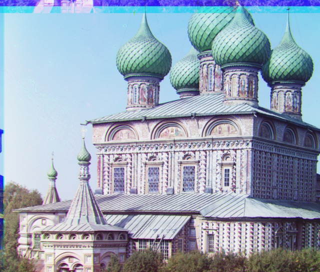
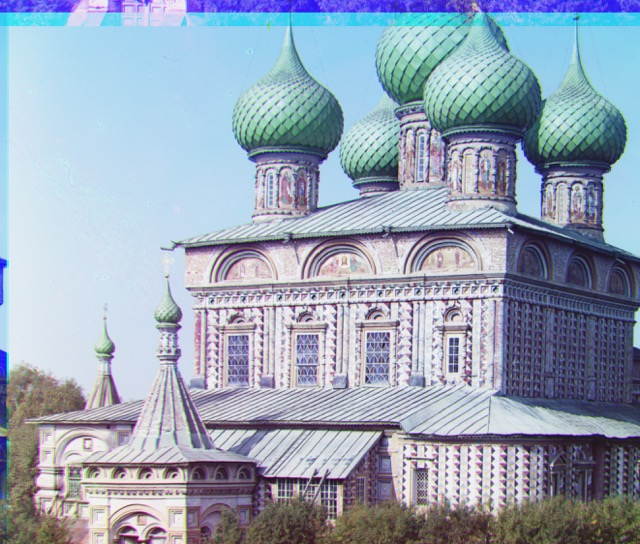
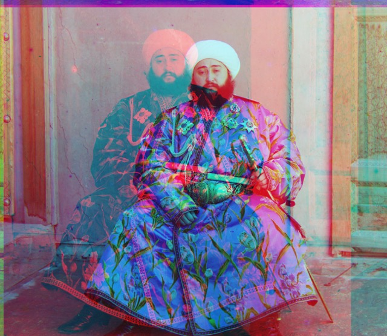
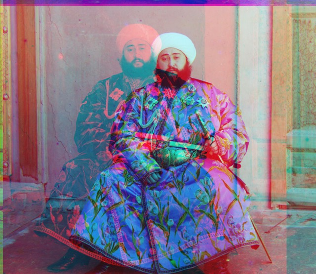

Colorizing the Prokudin-Gorskii Photo Collection
Cool History: Before color photography even existed Prokudin-Gorskii, took photgraphs across Russia with red, green, and blue filters, hoping one day to use a special projector to project these photographs in color. Unfortunately, he did not live to see this collection fully reconstructed as we can today. In this project, I use the the digitized glass plate negatives from the library of congress. The task is to align the three negatives, each taken with different filters (red, green, and blue) to colorize the images. Fulfilling Prokudin-Gorskii's objective by colorizing this collection feels like bringing life to history!
In order to align these red, green, and blue channels, I first implemented a naive, exhaustive search to find the displacement vector between one filter/channel and another. The naive search aims to find the optimal displacement between one channel and another against a certain metric. In other words, it minimizes loss for the different possible displacement vectors over a certain window, which I chose to be [-15, 15] in both the x and y direction. The options for the loss function were the euclidian distance between the pixel values (L2 norm) and the negative of the normalized cross correlation, which is the normalized dot product between the image vectors. Note that normally we would want to maximize the NCC, but under the hood, I minimized the negative NCC to treat it as a loss function (made code cleaner too). I aligned the red filter to the blue and the green filter to the blue and stacked them on top of each other, resulting in the following images.
Green displacement: [2 5] Red displacement: [ 3 12] Green displacement: [ 2 -3] Red displacement: [2 3]
Green displacement: [ 2 -3] Red displacement: [2 3]
 Green displacement: [3 3] Red displacement: [3 6]
Green displacement: [3 3] Red displacement: [3 6]
This naive search implementation works fine on lower resolution images, but runtime becomes an issue for higher resolution images. Thus, a an pyramid approach was taken. I first implemented this iteratively, downsampling the image by a factor of 2 until it reached a small enough, somewhat arbitrary size that worked well (no greater than 200 pixels wide). I saved each intermediate resolution. Starting at the coarsest resolution, I searched in a 15 by 15 window for the optimal displacement using my naive implementation. I multiplied the displacement returned by this by 2 and the search window by 0.7 to then search in the following (less coarse) resolution. This iterative implementation works fine, but I wanted a cleaner solution, so I ended up implementing this recursively, where the base case was the coarsest resolution. Instead of scaling the search window, I only search in the larger 15 by 15 window in the base case-- otherwise I search in a 3 by 3 window. The reason we can get away with this is that the anti-aliasing averages 4 pixels into one when downsampling by a factor of two. Thus, at a coarse level, the displacement vector returned can be in the vicinity of those 4 pixels. However, this is in an ideal image where its dimensions are a factor of two, so this must be expanded to a 3 by 3 window to account for this. For the following images, the recursive method with the NCC metric was used.
 Green displacement: [ 4 25] Red displacement: [-4 58] Green displacement: [17 59] Red displacement: [ 13 123]  Green displacement: [17 41] Red displacement: [23 89] Green displacement: [ 8 52] Red displacement: [ 11 113]
Green displacement: [10 81] Red displacement: [ 13 178]

Green displacement: [27 51] Red displacement: [ 36 108]
Green displacement: [-11 33] Red displacement: [-27 140]
Green displacement: [ 8 52] Red displacement: [ 11 113]
Green displacement: [10 81] Red displacement: [ 13 178]

Green displacement: [27 51] Red displacement: [ 36 108]
Green displacement: [-11 33] Red displacement: [-27 140]
 Green displacement: [29 78] Red displacement: [ 37 176]
GGreen displacement: [13 52] Red displacement: [ 11 111]
Green displacement: [29 78] Red displacement: [ 37 176]
GGreen displacement: [13 52] Red displacement: [ 11 111]
 Green displacement: [ 6 42] Red displacement: [32 87]

Green displacement: [24 49] Red displacement: [-241 33]
Green displacement: [ 6 42] Red displacement: [32 87]

Green displacement: [24 49] Red displacement: [-241 33]
As you can see from the Emir image above the red channel isn't quite aligned, resulting in a weird ghost-like double image. I tried a different metric, (bells and whistles suggestion) Structural Similarity Index, which takes into account the inter-dependency of pixels. However, this didn't help much. As explained above the general procedure was to align the red and green channels to the blue one. However, in this case, the jacket, which is a bright blue color, takes up a lot of pixels. Based on this color, the blue filter in this area will have a relatively high value (aporoaching 1) in comparison to the red and green (about 0). This will affect the metrics in a weird way. For example, for NCC, the correlation would be low, even though it is technichally the same area. To remedy this, instead of algining the red and green filters to the blue one, I tried aligning the blue and red to the green. Looks a lot better now!
 Red displacement: [17 57] Blue displacement: [-24 -49]
Red displacement: [17 57] Blue displacement: [-24 -49]